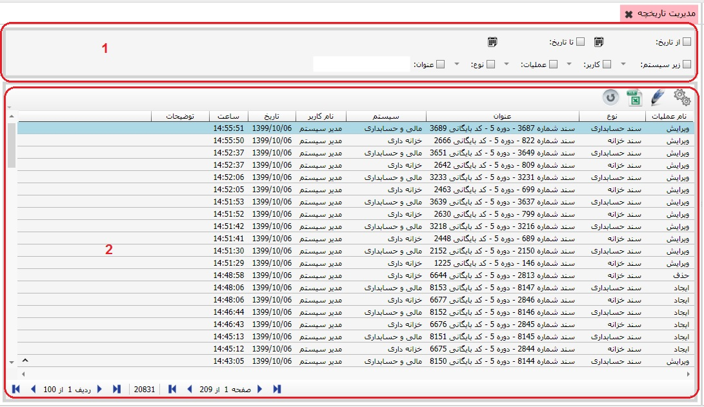

در سیستم اطلاعات پایه و مشترک با کلیک بر روی گزینه ی مدیریت تاریخچه صفحه ی زیر نمایان می شود:
تصویر بالا به وسیله ی دو کادر شماره گذاری شده است که ابتدا به شرح کادر شماره ی یک می پردازیم:
کادر شماره ی یک شامل فیلترهاییست که بعد از تعیین آنها موارد مورد نظر شما را در کادر شماره ی دو نمایان می کند.